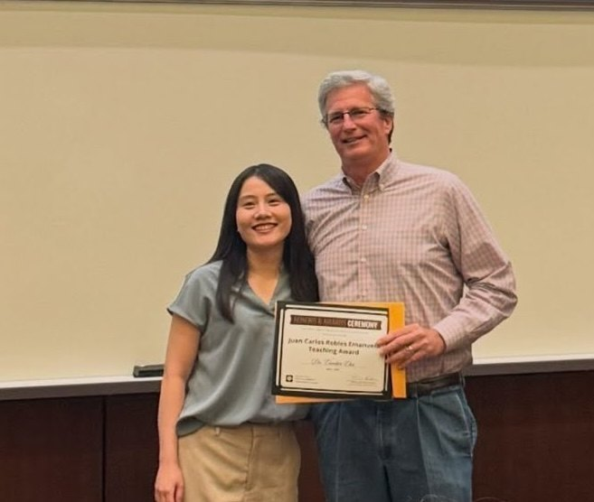

KeynotePurina Institute Global Summit · posted Oct 2025
The Impact of AI on Veterinary Diagnostics and Consulting
With Eli Cohen · panel discussion
Developing evidence-informed curricula that prepare veterinary students and professionals to understand, evaluate, and responsibly use artificial intelligence in clinical practice, research, and education. The framework below is published in Frontiers in Veterinary Science.

Educational Need
Five-Module Curriculum Framework
What artificial intelligence is and is not: core terminology, the difference between rule-based systems, machine learning and generative models, and where each realistically fits in veterinary practice.
How models are trained, validated and tested; what training data quality does to performance; and how to read a reported accuracy figure critically — including annotation, class imbalance and overfitting.
How language models generate text, why they produce confident errors, and practical prompting strategies for literature search, drafting and structured data extraction.
Professional accountability for AI-supported decisions, client consent and communication, patient data privacy, intellectual property, and institutional AI policy.
Applying AI across the research workflow — literature review, data handling, image analysis, and scientific writing — with explicit norms for disclosure and reproducibility.
VTPB 948 — Course Implementation
A graduate and professional elective at Texas A&M University's College of Veterinary Medicine & Biomedical Sciences, first offered in Spring 2026. The course delivers the five-module framework through hands-on work: students annotate cytology images, train a detection model, build an AI chatbot, evaluate commercial veterinary AI tools, and present a final project.
The full 15-week schedule is published as Table 1 of Huang and Chu, 2026.
Open Educational Resources
Videos & Podcasts
With Eli Cohen · panel discussion
Season 2, Episode 13 · recorded at the ACVP/ASVCP Annual Meeting
Podcast conversation on teaching AI to healthcare professionals
Interview on AI in veterinary diagnostics and academic workflows
Teaching demo for veterinary interns and students
Student Evaluation
I really liked how she organized the material and helped us focus on the big picture concepts. I also like how she taught the material in the way she goes through cases. This really helped me understand and have a way to go through the lab data consistently every time.
VTPB 927 Clinical Pathology · Fall 2025
I personally loved how Dr. Chu walked us through each step AND (most impactfully) intentionally drew the connection of what we learned to how it was applied. This really stood out to me because I feel a lot of professors jump pretty quickly to application without walking us through how that connection was made.
VTPB 927 Clinical Pathology · Fall 2025
She was very straight to the point of what we need to learn from her material and taught it well. She was a really great instructor.
VTPB 927 Clinical Pathology · Fall 2025
The course was very well organized and I had a clear understanding of what was required and when.
VTPB 948 Artificial Intelligence and Digital Tools · Spring 2026
She often prompted us to try new tools and alter the way we interacted with them to see how it altered the response.
VTPB 948 Artificial Intelligence and Digital Tools · Spring 2026